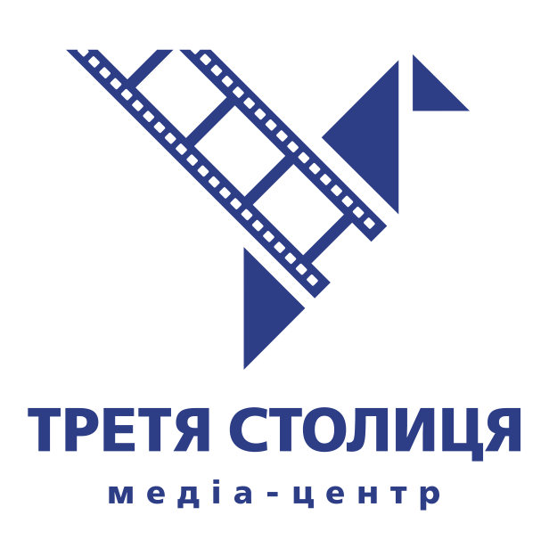

Професійний аудіовізуальний контент, локальне радіомовлення та онлайн-радіо, регіональний ютуб-канал та продакшн-студія.
Громадська організація «Медіа-Центр «Третя столиця» зареєстрована у січні 2021 року як незалежний хаб, який об'єднує професійних журналістів, продюсерів та творців контенту. Ми створили якісні локальні та регіональні медіа, захищаємо інформаційний простір та розвиваємо гіперлокальну журналістику в Україні.
Сприяння розвитку незалежних засобів масової інформації та аудіовізуального мистецтва в Україні. Ми будуємо мости між локальними громадами та світом, забезпечуючи аудиторію об'єктивною інформацією.
Медіа-Центр "Третя столиця" заснований практиками — журналістами, телерадіоведучими, медіаменеджерами та продюсерами. ГО «Медіа-Центр «Третя столиця» - це неприбуткова громадська організація. Усі кошти від комерційної діяльності йдуть на розвиток організації та медіа. Управління здійснюється через незалежні органи: Загальні збори, Правління, Наглядову та Редакційну ради.
Ми забезпечуємо об'єктивність, достовірність та захист вразливих груп. Заборонена цензура, прихована реклама ("джинса") та вплив спонсорів на контент.
Організація декларує політику «нульової толерантності» до корупції, хабарництва, шахрайства чи нецільового використання грантових коштів.
Забезпечення рівних можливостей та створення інклюзивного середовища. Нульова толерантність до будь-яких форм дискримінації. Використання гендерно чутливих підходів та інклюзивної мови у виробництві медіа-контенту.
Процедура запобігання впливу приватних інтересів на прийняття рішень від імені Організації. Обов'язкове декларування реального та потенційного конфлікту.
Збір лише необхідних даних. Безпека фінансових транзакцій (донатів) через партнерські шлюзи. Знеособлена аналітика.
Офіційна структура управління та власності суб'єкта інформаційної діяльності відповідно до вимог регулятора - Національної Ради України з питань телебачення та радіомовлення.
Локальна FM-радіостанція на частоті 92,3 МГц у Рівненській та Хмельницькій областях, онлайн-радіо 24/7. Місцеві новини та відмінна українська музика.
Політичні ток-шоу, інтерв’ю та репортажі. Понад 4400 підписників та загальна аудиторія медіа-групи "Третя столиця" - до 700 тис. осіб. Регіональна аналітика та експерти.
Створення аудіовізуального контенту. Рекламна інтеграція. Інформаційний супровід територіальних громад та партнерів.
Ми говоримо про найважливіші події регіону. Аналітика, місцеві новини, прямі включення та ексклюзивні гості у ток-шоу "Про важливе з Наталею Демедюк" та "МедіаПолітика".
4.4K+
Підписників
2.5К+
Відео
Медіа-Центр "Третя столиця" — громадська неприбуткова організація. Ваш внесок допомагає нам залишатися незалежними, розвивати українське медіа та створювати якісний контент.
Реквізити (ПриватБанк)
UA753052990000026006000701997
ЄДРПОУ: 44043771
Одержувач: ГО "МЕДІА-ЦЕНТР "ТРЕТЯ СТОЛИЦЯ"
Швидкий донат
Наживо в ефірі
Радіо RESPECT UA - 100% позитивної енергії!